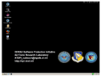
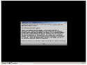

Lightweight Portable Security
There are any number of organizations that have a need for a security-oriented OS that can be freely used on computers at coffee shops, hotels, and the like. The US Department of Defense (DoD) is one such organization and it has put together Lightweight Portable Security (LPS), a live CD (or USB stick) Linux distribution, for use by its employees to access the web—or their desktop remotely. While the technology behind LPS is not particularly noteworthy, though it does have some interesting features, it is noteworthy that DoD chose Linux to deliver this kind of solution. Perhaps that shouldn't be surprising either, though, as the proprietary OS vendors don't really offer any way to customize their systems to anywhere near the extent that Linux does.

LPS was developed as part of the DoD's Software Protection Initiative (SPI),
which is run by the Air Force Research Laboratory (AFRL). SPI's mission is to
"marginalize a nation-state class threat's ability to steal and
exploit critical DoD intellectual property found in application software
(executables, source, and associated data).
" While LPS will
certainly help with that mission, it doesn't seem anywhere near hardened
enough to fend off nation-state class threats.
The distribution is available as ISO files in either of two "public" editions: standard or deluxe. The deluxe edition simply adds OpenOffice.org and roughly doubles the size of the release. The existence of a public version would seem to imply that there are less-public versions of LPS—one of those may be the LPS Remote Access Edition, which doesn't come with download links and instead has a way to request custom versions.
Version 1.1.1 of LPS was released on November 15 and can be burned onto a CD directly. In addition, bootable USB sticks can be created, but only (easily) under Windows.

When booting into LPS, one is greeted by a screen with badges for the three organizations responsible and a progress bar. After that, a window pops up that gives three choices: read the user agreement, agree to it and continue, or reject it and reboot. The agreement itself notes that the software is governed by the GPL and disclaims any warranty. While it is not unheard of for Linux distributions to have a click-through license, it is a bit strange.
Once the agreement has been accepted, LPS loads an IceWM desktop, which prominently features those three badges again, along with icons for a number of applications (e.g. Firefox, OpenOffice.org, Documentation, Xterm). The layout is fairly Windows-like, presumably so that it doesn't scare off the target users. There are also menu entries for things like SSH, Citrix, and Microsoft remote desktop clients.
Once you start poking around in LPS, though, some questionable things jump out. Starting the Xterm gives a root BusyBox shell for example, and a simple ps shows that everything runs as root. That includes Firefox, IceWM, the wicd network manager, and so on. One of the features of LPS is that it doesn't mount the local disks of the system, but that is trivial to work around with mount.
If LPS is started from CD, making persistent changes to it is not possible, but part of the idea is to isolate the data on the local disks from internet-based attacks. For public computers in hotels or elsewhere, there may not be anything of interest on the local disks, but if users are booting LPS on their home systems or laptops, that assumption may not have much merit. Given that everything runs as root, and the local disks are accessible, whatever OS is installed locally could be subverted.
For USB-based LPS systems, the situation is even worse. Though the USB stick isn't mounted by default after LPS boots, it certainly can be. The LPS user's guide [PDF] notes that removing and re-inserting the USB stick will mount it, though malware could also mount it directly. That would allow LPS itself to be persistently modified.
There are some warnings that might alleviate some of these problems. It is
recommended that a separate USB stick be used for data, for example. In
addition, there are suggestions that LPS be rebooted before making any
"sensitive
" transactions—and after after visiting dodgy web
sites. It seems a little unlikely that users will actually follow those
instructions, either because they forget or due to the annoyance of a
fairly lengthy boot time.
It is a fairly old kernel that LPS uses (2.6.27), but it has been updated to one of the more recent—but not the most recent as of November 15—stable versions (2.6.27.53) based on the uname string. Whether there have been any patches applied on top of that kernel is difficult to determine as there is no source code provided—at least in any obvious location.
A query about the source location was answered by Rich Kutter of the AFRL who said that LPS is based on Thinstation 2.2.2 with only minimal modifications. A change to the OpenSC smart card libraries/utilities to better support the DoD Common Access Card (CAC) is the only substantive change. He said that the code for that change will be placed in the ISO image for the next release due later in December. But that doesn't satisfy the GPL requirements, as the full source needs to be made available, which is something they are planning to do, he said.
It would seem that SELinux has not been enabled for LPS, which may not be a huge surprise for a, supposedly, read-only system. It is, however, another US government security solution for Linux, and could have been used to sandbox Firefox and its Flash plugin for example (though just running them as non-root would be a good start). Overall, one gets the feeling that the folks behind LPS may be working in something of a vacuum, and not fully considering all of the threats that LPS might face. Perhaps part of the reason there is a public version is to get that kind of feedback.
There are some specific additions to LPS for DoD users, including support for CAC and Personal Identity Verification smart cards. Evidently, there are some web sites that are only available to folks that have those cards and an available USB smart card reader, so Firefox has been configured to do that kind of verification.
There is also an Encryption Wizard that allows for Advanced Encryption Standard (AES) encryption and decryption of files. The Java-based wizard has also been turned into a Firefox plugin so that web-based email (e.g. Yahoo, Gmail, Outlook Web Access) can be encrypted.
Overall, LPS is perfectly usable—if painfully slow for unknown reasons on a not underpowered laptop—for web surfing and document creation. It has a very limited set of applications, presumably by design, and no way to add any new ones. If you need GIMP or Thunderbird, it would seem that you are simply out of luck. Once the source code for building the distribution is available, one could presumably build their own derivative with additional applications, but that is difficult to do at the moment.
While it seems dubious that LPS would thwart a targeted attack from a
nation-state-sized attacker, that is probably also true of most or all Linux
distributions. But there is clearly more that could be done to harden LPS
against less targeted, or less deep-pocketed, attackers. LPS may give the
impression of being more secure than it actually is because of where it
comes from, and that is a bit worrisome. Given that there are entities
actively trying to access classified information—either for espionage
or posting on Wikileaks—LPS only provides a partial solution to
those problems.
| Index entries for this article | |
|---|---|
| Security | Distributions |
Posted Dec 16, 2010 6:17 UTC (Thu)
by PaulWay (guest, #45600)
[Link]
One has to assume that the goal of this project is not to protect against such an attack - no software really can - and instead to secure as best one can the software side. I'm not convinced they've done a good job of that either. Using a non-root user is a trivial thing to do but puts in all the security that Unix has had by default for more than thirty years. Using SELinux and containers these days is a no-brainer for building an operating system secure against software attacks. They really need to set the bar much higher.
Have fun,
Paul
Posted Dec 16, 2010 15:36 UTC (Thu)
by dlang (guest, #313)
[Link] (7 responses)
the purpose of LPS is to be independent of anything in the local system, so that if there is malware on the local system it doesn't affect you.
for this sort of thing, simply not mounting the local system is good enough, you don't need to make it impossible to do so.
that being said, there is definitely room for improvement here, running as a non-root user by default, and using a security module (SELINUX or other) to protect the system would be big wins.
Posted Dec 16, 2010 15:49 UTC (Thu)
by jake (editor, #205)
[Link] (6 responses)
hmm, it's also meant to protect against malware coming across the wire ...
jake
Posted Dec 16, 2010 18:46 UTC (Thu)
by dlang (guest, #313)
[Link] (5 responses)
however, this has nothing to do with accessing local drives.
Posted Dec 16, 2010 19:22 UTC (Thu)
by jake (editor, #205)
[Link] (4 responses)
i feel like somehow i am missing your point, sorry if so ...
malware over the wire can mount the local drives and do various ugly things ... that's what it has to do with accessing local drives ... as we seem to agree, an LSM and/or non-root user would help here, but that's not the case currently ...
jake
Posted Dec 16, 2010 20:39 UTC (Thu)
by dlang (guest, #313)
[Link] (3 responses)
malware doesn't need to access the local drives to do bad things, and malware would have a hard time figuring out what local drives to mount where to do bad things to them anyway. I'm not aware of any malware that goes digging through your system to even try to do this sort of thing, all malware that I am aware of just affects the stuff that's currently mounted.
in the article you spent a lot of time talking about how the user can still get at the local disks, and my point is that that really doesn't matter.
Posted Dec 16, 2010 20:55 UTC (Thu)
by jake (editor, #205)
[Link] (1 responses)
and my point is that it *does* matter ... whether malware exists today that roots around on the local disks for information of interest, or to alter the installed OS, doesn't really matter -- though i suspect there are isolated cases of that kind of malware out there already ...
the organization sponsoring LPS is set up to protect the data of the DoD, which may well reside on the local disks and/or the USB stick ... if DoD employees are using this at home or on their laptops as some sort of "secure web browser", and have local data of interest, there is a problem, no?
and if we are protecting against nation-state class attacks, those actors developing targeted malware to access or modify that local data is most certainly in the cards ...
i guess i didn't miss your point, i just disagree :)
jake
Posted Dec 16, 2010 23:01 UTC (Thu)
by dlang (guest, #313)
[Link]
not to boot this on a secured DoD system and access insecure networks (things like disk encryption, firewall rules, air-gapped networks, etc would come in to play to prevent this)
if the user has sensitive data on their local machine that is a problem completely separate from LPS, and LPS can't solve the problem (the person can just boot into the normal OS of the box, or boot from another live CD, in any case that data is exposed)
Posted Dec 16, 2010 21:01 UTC (Thu)
by droundy (guest, #4559)
[Link]
Posted Dec 16, 2010 17:22 UTC (Thu)
by sorpigal (subscriber, #36106)
[Link] (1 responses)
One day perhaps connecting to DoD networks from home computers running anything *but* LPS will be banned. I think that would be the ultimate end goal of this kind of project.
Posted Jan 14, 2011 20:07 UTC (Fri)
by HunkyDory (guest, #72382)
[Link]
The Public version is just for surfing. Its seems reasonable to me that the free Public version is lower security (= easier to maintain, give away free, able to be used by more folks, simplier, a plaything, the alpha-version, try-it-first-here-before-lockdown, etc.) and the Remote Access version would have far more advanced security features. The pages hints at just that, even saying its only given out as individualized custom builds.
Given that DoD laptops are some of the most locked down computers out there AND the DoD is very defensive about its networks AND the Government is a vast bureacracy, it would suggest that this 'new kid on the block' has to be far superior to the existing solutions get that high a level of approval - the DoD CIO approved it for emergency use!
Posted Jan 14, 2011 20:31 UTC (Fri)
by HunkyDory (guest, #72382)
[Link]
This LPS is different than Windows, isn't connected to whatever is on the computers harddrive, and runs only temporarily (as its not all-purpose enough to be used for everything). Which to me says:
1.) The Govt is FINALLY seeking some diversity in its deployed networks (Schneier on Security: Software MonoCulture, http://www.schneier.com/blog/archives/2010/12/software_mo...)
2. No storage. The bad guys must repeatedly get into it a fresh each time, perhaps missing the important things that users do first.
3. Runs for brief periods. If it runs only for a short time, its hard for the enemy to get a toe-hold during those brief moments.
4. Its portable. The bad guys have to look everywhere, on all different kinds of hardware that users might use, just not the models the Government buys.
5. Its more annoymous. Upon each boot, you look exactly like every other LPS user. (Browser Versions Carry 10.5 Bits of Identifying Information on Average, http://www.eff.org/deeplinks/2010/01/tracking-by-user-agent) making it far more difficult to track/target an individual.
6. Only hardware can stop hardware risks, but if the software that runs on the hardware keeps changing (even quarterly) and corporate hardware is replaced only every 4 years it possible to deploy something hardware/firmware malware finds difficult to understand and perhaps, even tricks to defeat specific strains.
7. Its a very thin Linux (Thinstation?!!). It can run well on very old machines, further making new hard/firm-malware even less likely relevent.
Hmmm, it seems to get more secure as I think about it.
For example, why would one even need a firewall, anti-virus, or other common security features if all you're doing is booting up to bank online or visit other sensitive, relatively safe sites?
Lightweight Portable Security
Lightweight Portable Security
Lightweight Portable Security
> so that if there is malware on the local system it doesn't affect you.
Lightweight Portable Security
Lightweight Portable Security
Lightweight Portable Security
Lightweight Portable Security
> still get at the local disks, and my point is that that really doesn't
> matter.
Lightweight Portable Security
Lightweight Portable Security
Lightweight Portable Security
for telecommuting
What about Time and Diversity?